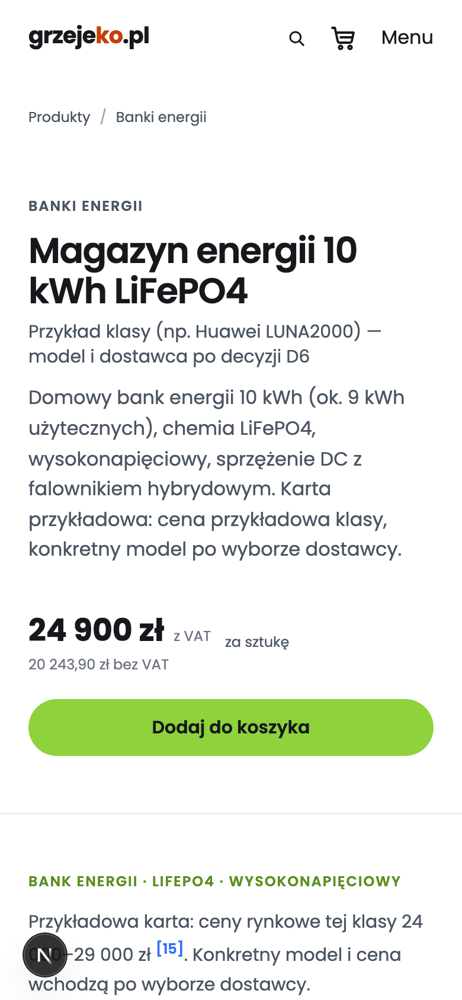
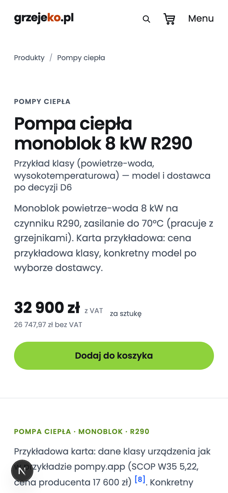
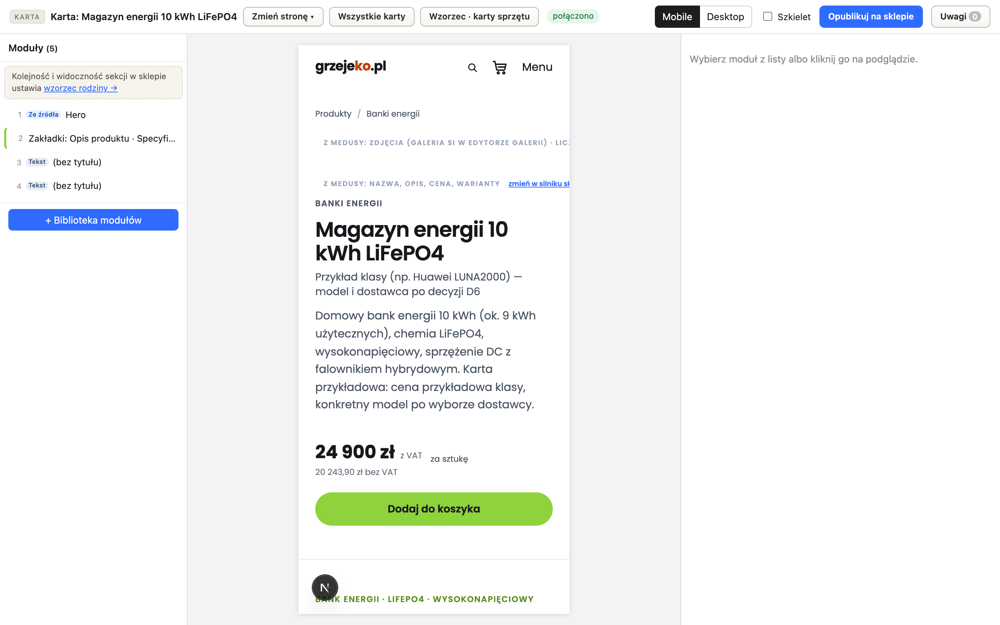

grzejeko-shop · M0 / M1 / M1b
26.10.2026 · sesja „środowisko” · lokalnie: Medusa :9001 · Next :8001 · edytor :8913 · Postgres :5434 · Redis :6381
curl -s http://localhost:8001/pl/products/bank-energii-10kwh → <h1> „Magazyn energii 10 kWh LiFePO4”, „24 900 zł”, application/ld+json Product/Offer z "price":"24900.00", PLN i validFrom z chwili renderu.
(b) node scripts/smoke.mjs → PASS 10/10, w tym [3b]: zmiana ceny w Medusie widoczna od razu.
Do tego scripts/test-adapter.mjs 10/10 i Playwright headless 390 px 2/2 (scrollWidth 390, 0 przewijań wewnętrznych, 0 błędów JS).
M1b: edytor :8913 otwiera kartę z ceną z Medusy, zapisuje tylko szkic.json, a /preview pokazuje szkic.import_medusa.py w kopii się wywaliła, a następna linia odpaliła skrypt z domyślnymi ścieżkami RFB. W NOTEL_RFBenchmark/test-env/edytor_kart/ nadpisał pliki 11 kart: dane.json zostały puste, a edytor.json straciły znaczniki rodzina=software (n-analytics, rfb-professional-n-analytics-portal) i packshot_zaslepka (rfb-dps-case, rfb-hw-cube, rfb-probe-mkii-m2m). Moja ocena „produkcja bezpieczna” była błędna: wrzutki RFB z tego dnia przeniosły zepsute edytor.json na serwer. Naprawione 26.10 przez sesję RFB: wszystkie 11 dane.json z serwera, edytor.json lokalnie i na serwerze z kopii z 13:14; edytor na serwerze znów widzi 3 aplikacje i 10 urządzeń. Kopia grzejeko odmawia już zapisu do katalogu RFB.1. Co wycięte z Payload
Storefront — usunięte pliki (25):
| Katalog | Pliki |
|---|---|
src/app/(payload)/ | layout.tsx, custom.scss, admin/[[...segments]]/page.tsx, admin/[[...segments]]/not-found.tsx, admin/importMap.js, api/[...slug]/route.ts, api/rfb-formulki/route.ts |
src/collections/ | RfbProducts.ts, Media.ts, Users.ts, ContentStatusDashboard.tsx, ContentStatusTable.tsx |
src/globals/ | CardMasters.ts, LegalTexts.ts, MailTemplates.ts, SalesRules.ts |
src/migrations/ | index.ts, 20261009_092045_initial.{ts,json}, 20261011_082836_card_masters.{ts,json}, 20261026_100000_mail_templates.ts, 20261026_120000_legal_texts.ts, 20261026_140000_sales_rules.ts |
src/ | payload.config.ts |
Storefront — konfiguracja:
next.config.jsbezwithPayload;tsconfig.jsonbez aliasu@payload-config.- Z
package.jsonwypadły:payload,@payloadcms/db-postgres,@payloadcms/next,@payloadcms/richtext-lexical,pg,@types/pg,graphql. .npmrc:legacy-peer-deps=true, bo@ec5/contentdeklarujepayloadjako peer. Po instalacjinode_modules/payloadnie istnieje.
Storefront — odczyty Payload zastąpione plikami (te same typy zwrotne):
getPayloadModules→getTrescKarty(adapter);reguly-serwer.ts→tresc/reguly.json;formulki-serwer.ts→tresc/formulki.json;card-masters.ts→tresc/wzorce_kart.json.
RfbHomepage, czytała Payload dla 13 handle RFB) zastąpiona listą produktów z Medusy.
Backend:
- usunięty
subscribers/product-sync-payload.ts; rfb-mailbezcms_url— teksty maili zostają domyślne z kodu;- seedy i dane katalogu RFB zastąpione przez
seed-grzejeko.ts.
Edytor: bez maile.py, sprzedaz.py, stron maile/sprzedaz.html i ich tras. karta_medusa.py: klient Payload REST → PlikKlient.
2. Interfejs treści: jak RFB go dziś realizuje, jak działa adapter grzejeko
@ec5/content/adapter/types.ts definiuje ContentAdapter z trzema operacjami (readPublished, saveDraft z tokenem konfliktu, listStatus) i ConflictError. W RFB nie ma żadnej klasy, która go implementuje — grep po readPublished|ContentAdapter w RFB i ecomms5-template znajduje tylko sam plik typów. Trzy operacje są rozrzucone po różnych kawałkach:
| Operacja | RFB dziś (Payload) | grzejeko (pliki) |
|---|---|---|
| readPublished | storefront: getPayloadModules() → Payload Local API payload.find({collection:"products", draft}) → blocksToModules() | adapterPlikowy.readPublished(handle) → tresc/karty/<handle>/dane.json; token = sha1 pliku; odczyt bez cache |
| saveDraft | edytor Python: karta_medusa.zapisz_szkic → PATCH /api/products/:id?draft=true; token = odcisk treści | sklep: adapterPlikowy.saveDraft (sha1, ConflictError, zapis atomowy, approved → proposal); edytor: PlikKlient.zapisz_szkic (odcisk treści, jak w RFB) → tylko szkic.json |
| listStatus | panel Payload ContentStatusDashboard + edytor stan_kart() | adapterPlikowy.listStatus() skanuje tresc/karty/* |
| publikacja | przycisk „Publish” (Payload _status: published) | poza interfejsem i poza edytorem (403) — Tomek: szkic.json → dane.json |
Plik = ProductContent (handle, title, layout: ModuleBlock[]) + zrodla. Bloki są w tym samym formacie co Payload w RFB, więc sklep dalej używa blocksToModules(). Typy spoza schematu przechodzą 1:1. Kod: apps/storefront/src/lib/tresc/adapter-plikowy.ts, katalog.ts. Format opisany w README.md → „Format treści”. Kształt koszt_calkowity i dla_kogo uzgodniony z sesją „moduł pisania” (notatka w folderze sesji).
3. Mapowanie modułów prototypu (prototyp/bank_karta.html, pompa_karta.html)
| Prototyp | Moduł | Uwagi |
|---|---|---|
| tagi kategorii + akapit pod H1 | hero.tagline, hero.lede | H1, podtytuł i opis — z Medusy |
| tabela parametrów | specs.groups[Parametry] | bez wiersza „cena za kWh” — liczy go sklep z ceny Medusy (S1) |
| „od 24 000 zł” (cena w boksie) | — (Medusa) | cena przykładowa → produkt w Medusie 24 900 / 32 900 zł; JSON-LD Offer z Medusy |
| „Koszt całkowity — Ty składasz” | koszt_calkowity (nowy typ grzejeko) | pozycje z odwołaniem medusa, montaż jako grupa:"montaz", widełki rynkowe ze źródłem; bank: cena za kWh i zapas do progu 3 000 zł/kWh liczone z ceny Medusy |
| „Dla kogo (a dla kogo nie)” | dla_kogo (nowy typ: tak[], tak_ale[], nie[]) | — |
| „Pytania, które ludzie zadają” | faq.items[{q,a}] | w HTML, bez FAQPage (kanon GEO E7/E8) |
| „Skąd te liczby” + odnośniki [n] | zrodla{n:{opis,url,pobrane}} + sources[] bloków | bank: 9 źródeł [14–22], pompa: 7 [1,3,6–10]; każdy [n] w tekście ma źródło (sprawdzone skryptem) |
| „Możliwa dotacja CP do 50 900 zł” (pompa) | koszt_calkowity.widelki_rynkowe | wiersz „Dotacja Czyste Powietrze” |
4. Czego nie dało się przenieść i dlaczego
- Interaktywna suma (checkboksy/radio + „Razem”). Wymaga EMS, zasobnika, bufora i montażu jako produktów Medusy. Brakuje oferty (D6) i cen montażu (D7). Ceny własne w module są zakazane (S1), więc pozycje pokazują „do ustalenia” albo „0 zł”, a widełki rynkowe stoją osobno.
- Ceny własne z prototypu („od 24 000 zł”, „EMS 2 000 zł*”, „montaż 4 500 / 7 000 zł*”) — nie przeniesione celowo (S1, D15).
- Zdjęcia. Prototyp ma tylko zrzuty stron, zdjęć produktu brak. Karta działa bez zdjęć.
- Poradniki i strony montażu (4 z 7 stron K0) — poza zakresem M0, to M6.
- Przycisk „Do koszyka” z prototypu → zwykły „Dodaj do koszyka” Medusy. Montaż w koszyku = B2.
- Rebranding: szyld, tytuły, nawigacja i strona startowa — grzejeko. Stopka, maile i teksty prawne zostają z RFB (B1).
5. Decyzje techniczne podjęte po drodze
- Ceny brutto: region Polska z
is_tax_inclusive+ preferencja ceny PLN, VAT 23%. Bez tego Medusa doliczałaby VAT do 24 900. VAT 8% na montaż w budownictwie mieszkaniowym = decyzja przy D7. - Format kwot pl: bez groszy dla pełnych złotych, zwykła spacja zamiast NBSP (wyszukiwalne w HTML),
whitespace-nowrapprzeciw łamaniu. - Karta i boks zakupu czytają Medusę bez cache (
listProducts({swieze:true})), bo JSON-LD niesie datę odczytu. Bez tego cena była nieświeża do 60 s — złapał to test zmiany ceny. - FAQPage wycięty (kanon GEO E7/E8). S2 w BUILD_PLAN go wymienia — do korekty planu.
- Skrzynka maili poza
apps/backend. Plik w katalogu backendu restartowałmedusa developprzy każdym zamówieniu. - Zrzuty przez kanoniczny
capture_core.launch_ladder(L0, headless). Bez nowego skryptu: hook duplikatów zablokowałzrzut_390.py, acapture_corewystarczył.
6. Zrzuty (390 px, headless)



Pełne strony: logs/ui/karta_*_390.png.
7. Otwarte
- Tomek: D6 (SKU, dostawca), D7 (montaż: cena, zasięg, VAT) — odblokowują sumę kosztu całkowitego; przejście karty na telefonie; korekta S2 (FAQPage).
- M2: pola typów grzejeko w panelu edytora (dziś „Tekst (bez tytułu)”); renderery
dotacja,kroki,cta(łańcuch pisania już je produkuje). - Reszta M0:
geo_checkna karcie (nie uruchamiałem). - Lista funkcji asystenta i kontroli GLOV do przeniesienia:
README.md→ „Edytor kart”, tabela 12 pozycji + 2 „nie dotyczy”. - Serwery (Medusa, Next, edytor) chodzą jako zadania w tle tej sesji. Po jej zamknięciu mogą stanąć. Start:
README.md→ „Start”. Dockergrzejeko_*marestart: unless-stopped.